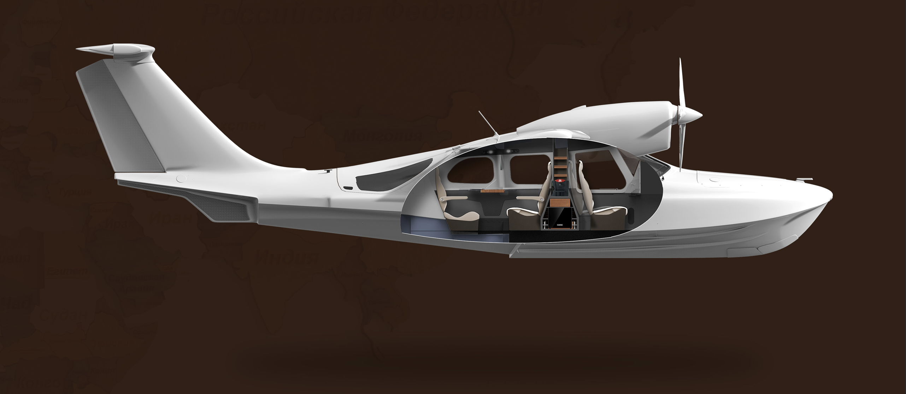

LA-8 seaplane interior and experiental design
An opportunity to reinterpret an old way of travelling

OVERVIEW
For this Bachelor's thesis at @ISIA Firenze, I collaborated with Daria Bjorn from @Savonia UAS University of Finland, we had the opportunity to collaborated with @JEKTA aviation on redesigning the LA-8 Seaplane interior.
Through user-centered design and iterative collaboration with company experts, we successfully developed two distinct interior configurations (VIP and Adventure) for experiential tourism, facilitating unique journeys to remote and wild destinations!
Goal
Redesign of the passenger cabin aims to satisfy passenger needs and offer a personalized travel experience
My Role
Conducting UX research, performing competitor analysis, benchmarking, conducting ergonomics testing, developing interior concepts, 3D modeling and rendering
Design focus
Usability& Ergonomic research, user research, product, UX, interior vehicle design
Timeline
6 months
OUR APPROACH
- Conducted user research, usability studies, and interviews with experts.
- Performed competitor analysis and benchmarking to identify best practices, market gaps, and opportunities.
- Created concepts for the two versions (VIP and Adventure) and defined the associated indoor and outdoor activities.
- Executed detailed design, 3D modeling, and rendering.
GOAL
- Identify preferred luxury activities for high-budget travelers that are feasible with seaplanes.
- Redesign of the passenger cabin to satisfy passenger needs and offer the user a personalized travel experience based on the chosen aircraft configuration (VIP or Adventure), in line with indoor and outdoor activities.
- Identify preferred luxury activities for high-budget travelers that are feasible with seaplanes.
- Redesign of the passenger cabin to satisfy passenger needs and offer the user a personalized travel experience based on the chosen aircraft configuration (VIP or Adventure), in line with indoor and outdoor activities.

KEY FINDINGS
The redesign of the cabin concept follows a simple and functional design that the authors understand as a combination of technical and visual solutions, which provide a new generation of “sky ships”. To fully understand the needs and activities that a high-budget customer is interested in carrying out, the authors covered a part of the research focused on the trends of experiential tourism and innovations in the luxury transport market.
/Presentazionetesi_Ilaria Torcolacci_compressed_pages-to-jpg-0008.jpg)
/Presentazionetesi_Ilaria Torcolacci_compressed_pages-to-jpg-0010.jpg)
/Presentazionetesi_Ilaria Torcolacci_compressed_pages-to-jpg-0011.jpg)
/Presentazionetesi_Ilaria Torcolacci_compressed_pages-to-jpg-0012.jpg)
/Presentazionetesi_Ilaria Torcolacci_compressed_pages-to-jpg-0015.jpg)
/Presentazionetesi_Ilaria Torcolacci_compressed_pages-to-jpg-0016.jpg)
/Presentazionetesi_Ilaria Torcolacci_compressed_pages-to-jpg-0017.jpg)
/Presentazionetesi_Ilaria Torcolacci_compressed_pages-to-jpg-0018.jpg)
/Presentazionetesi_Ilaria Torcolacci_compressed_pages-to-jpg-0019.jpg)
/Presentazionetesi_Ilaria Torcolacci_compressed_pages-to-jpg-0020.jpg)
/Presentazionetesi_Ilaria Torcolacci_compressed_pages-to-jpg-0021.jpg)
/Presentazionetesi_Ilaria Torcolacci_compressed_pages-to-jpg-0022.jpg)
/Presentazionetesi_Ilaria Torcolacci_compressed_pages-to-jpg-0023.jpg)
/Presentazionetesi_Ilaria Torcolacci_compressed_pages-to-jpg-0024.jpg)
/Presentazionetesi_Ilaria Torcolacci_compressed_pages-to-jpg-0025.jpg)
/Presentazionetesi_Ilaria Torcolacci_compressed_pages-to-jpg-0026.jpg)
/Presentazionetesi_Ilaria Torcolacci_compressed_pages-to-jpg-0027.jpg)
/Presentazionetesi_Ilaria Torcolacci_compressed_pages-to-jpg-0028.jpg)
/Presentazionetesi_Ilaria Torcolacci_compressed_pages-to-jpg-0031.jpg)
/Presentazionetesi_Ilaria Torcolacci_compressed_pages-to-jpg-0032.jpg)
/Presentazionetesi_Ilaria Torcolacci_compressed_pages-to-jpg-0033.jpg)
/Presentazionetesi_Ilaria Torcolacci_compressed_pages-to-jpg-0034.jpg)
/Presentazionetesi_Ilaria Torcolacci_compressed_pages-to-jpg-0035.jpg)
/Presentazionetesi_Ilaria Torcolacci_compressed_pages-to-jpg-0036.jpg)
/Presentazionetesi_Ilaria Torcolacci_compressed_pages-to-jpg-0037.jpg)
/Presentazionetesi_Ilaria Torcolacci_compressed_pages-to-jpg-0038.jpg)
/Presentazionetesi_Ilaria Torcolacci_compressed_pages-to-jpg-0039.jpg)
/Presentazionetesi_Ilaria Torcolacci_compressed_pages-to-jpg-0040.jpg)
/Presentazionetesi_Ilaria Torcolacci_compressed_pages-to-jpg-0041.jpg)
/Presentazionetesi_Ilaria Torcolacci_compressed_pages-to-jpg-0042.jpg)
/Presentazionetesi_Ilaria Torcolacci_compressed_pages-to-jpg-0043.jpg)
/Presentazionetesi_Ilaria Torcolacci_compressed_pages-to-jpg-0044.jpg)
/Presentazionetesi_Ilaria Torcolacci_compressed_pages-to-jpg-0045.jpg)
/Presentazionetesi_Ilaria Torcolacci_compressed_pages-to-jpg-0046.jpg)
/Presentazionetesi_Ilaria Torcolacci_compressed_pages-to-jpg-0047.jpg)
/Presentazionetesi_Ilaria Torcolacci_compressed_pages-to-jpg-0048.jpg)
/Presentazionetesi_Ilaria Torcolacci_compressed_pages-to-jpg-0049.jpg)
/Presentazionetesi_Ilaria Torcolacci_compressed_pages-to-jpg-0050.jpg)
/Presentazionetesi_Ilaria Torcolacci_compressed_pages-to-jpg-0051.jpg)
/Presentazionetesi_Ilaria Torcolacci_compressed_pages-to-jpg-0052.jpg)
/Presentazionetesi_Ilaria Torcolacci_compressed_pages-to-jpg-0053.jpg)
/Presentazionetesi_Ilaria Torcolacci_compressed_pages-to-jpg-0054.jpg)
/Presentazionetesi_Ilaria Torcolacci_compressed_pages-to-jpg-0055.jpg)
/Presentazionetesi_Ilaria Torcolacci_compressed_pages-to-jpg-0056.jpg)
/Presentazionetesi_Ilaria Torcolacci_compressed_pages-to-jpg-0057.jpg)
/Presentazionetesi_Ilaria Torcolacci_compressed_pages-to-jpg-0058.jpg)
/Presentazionetesi_Ilaria Torcolacci_compressed_pages-to-jpg-0060.jpg)
/Presentazionetesi_Ilaria Torcolacci_compressed_pages-to-jpg-0061.jpg)
/Presentazionetesi_Ilaria Torcolacci_compressed_pages-to-jpg-0062.jpg)
/Presentazionetesi_Ilaria Torcolacci_compressed_pages-to-jpg-0063.jpg)
/Presentazionetesi_Ilaria Torcolacci_compressed_pages-to-jpg-0064.jpg)